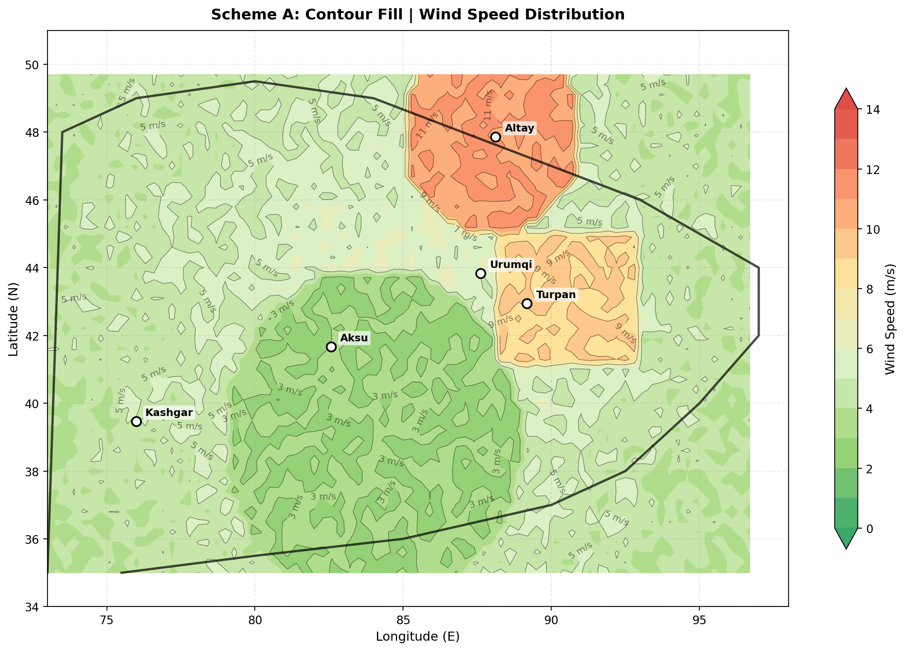
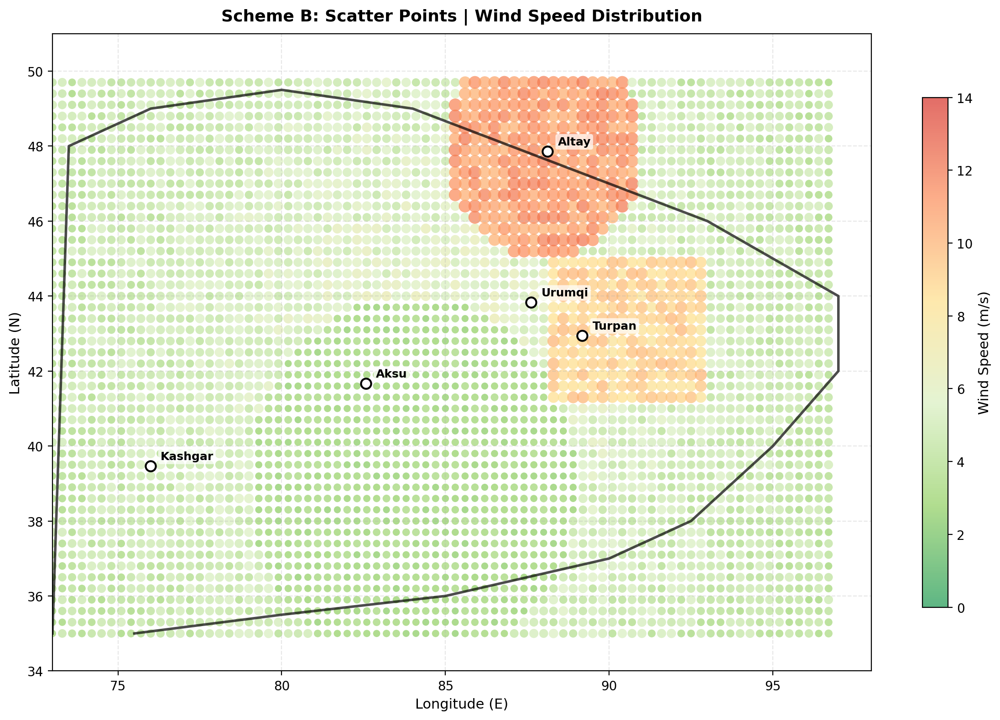
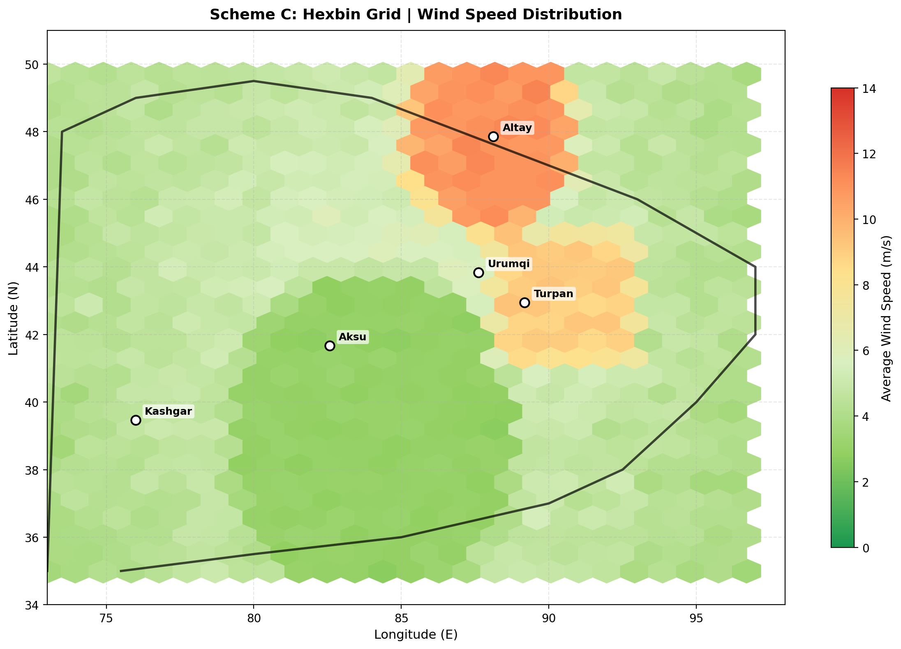

Scheme A: Contour Fill
Uses contour lines with color-filled regions to show wind speed gradients. Iso-lines are labeled with exact values. Best for scientific publications.
Features
✓ Contour labels (3, 5, 7, 9, 11 m/s)
✓ Smooth gradient transitions
✓ Professional scientific style

Scheme B: Scatter Points
Each grid point is displayed as a circle. Size and color represent wind speed magnitude. Good for showing data distribution patterns.
Features
✓ Point-based visualization
✓ Size = wind intensity
✓ Shows data granularity

Scheme C: Hexbin Grid
Aggregates data into hexagonal bins. Each hex shows average wind speed. Excellent for balancing detail and clarity.
Features
✓ Hexagonal aggregation
✓ Averaged values
✓ Modern cartographic style
Low (0-3 m/s)
Medium-Low (4-6 m/s)
Medium (7-9 m/s)
High (10-12 m/s)
Very High (13+ m/s)